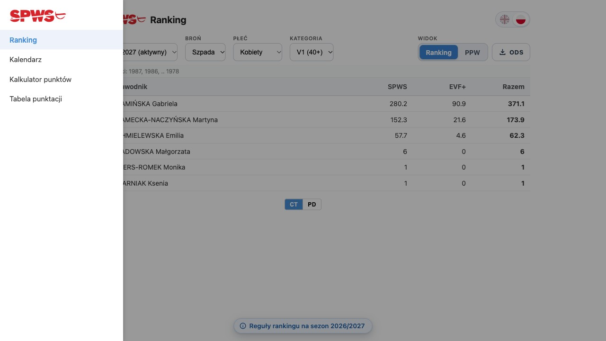
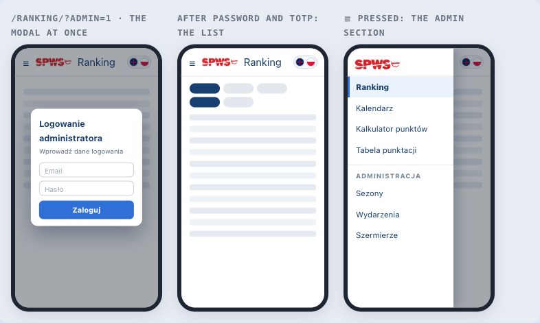
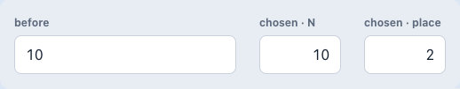
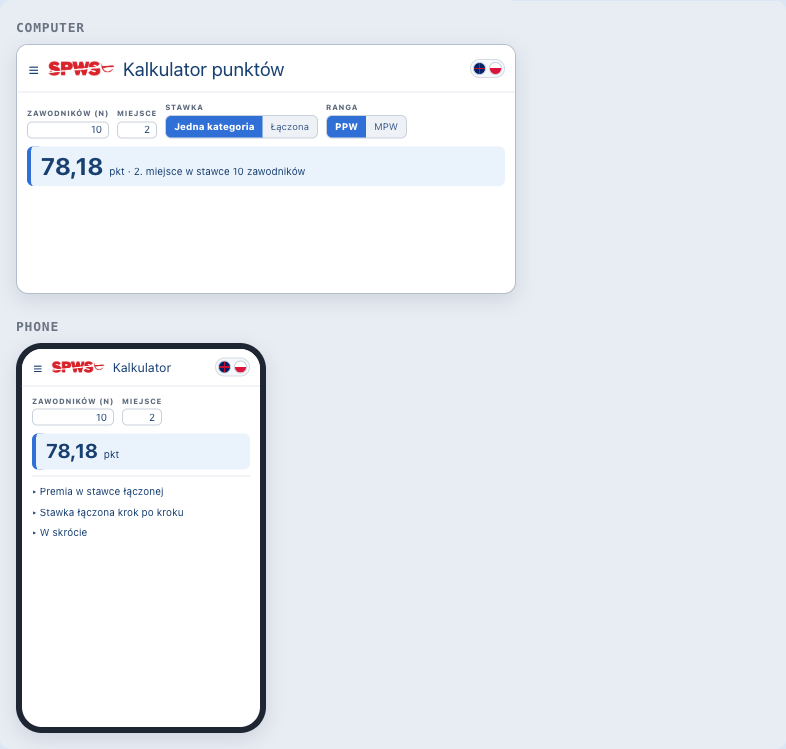
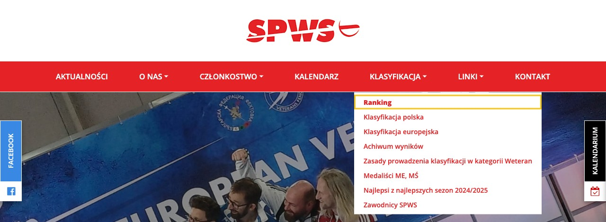

context
Context
The SPWS ranking, calendar and points calculator are published on GitHub Pages
at https://fencer4life.github.io/spws-automated-ranklist/. That address is
not the association's website. Fencers reach weteraniszermierki.pl, whose
calendar page /kalendarz-2/ is 25 KB of hand-typed event lines maintained by
hand, three seasons deep, while the generated calendar with live registration
sits on an address almost nobody knows.
ADR-007 anticipated exactly this: the component was built as a custom element with Shadow DOM specifically so it could be embedded in a WordPress page. The mechanism has existed since M8 and has never been used.
What was measured on 2026-09-05, against the live site and the live database, rather than assumed:
- The embed survives WordPress's save-time filter. A draft page carrying
<spws-calendar>, an external<script type="module">, an inline<script>, a<style>element and hyphenated custom attributes was written over XML-RPC and read back byte-identical. The administrator holdsunfiltered_html, as the single-site install predicted. The plannedmu-pluginsfallback — and with it the dependency on a DirectAdmin login nobody holds — is not needed. - The render-time filter behaves differently from the save-time one.
wpautopis active: measured against three published pages, bare text and a top-level<img>are wrapped in<p>, while a top-level<div>passes through untouched.spws-calendaris not a tagwpautoprecognises, so the embed is wrapped in a<div>to keep it out of a paragraph. - The theme prints its own
<h1 class="entry-title">above the content area on every page. The plan's "no page heading" cannot be achieved by omitting a heading from the content; it needs a rule that hides the theme's. - PROD's security posture is green now, not as of the last deploy: all five
ADR-083 assertions pass against
spws-ranklist-prod. - PROD's calendar data is sound. 120 rows across 4 seasons;
arr_weaponsfully populated; none of the three known CERT defect classes present. The 23 undatedCREATEDrows in the current season are ADR-077 planning skeletons and are already hidden twice over —calendarMonths.ts:258drops events with nodt_start, andvisibleEventsatcalendarMonths.ts:545filtersenum_status !== 'CREATED'.
Two defects in the existing code were found by the tests written for this work, both invisible while the application only ever ran on GitHub Pages:
- A PROD-only embed rendered blank.
activeEnvwas initialised to the literal'CERT', andsupabaseUrlderived asactiveEnv === 'PROD' && prodUrl ? prodUrl : certUrl. Given only the PROD pair, that yields an empty string, the init effect'ssupabaseUrl && supabaseKeyguard never passes, and nothing loads — with no error anywhere. This is the mirror image of the 2026-08-17RegistrationElementdefect, where(certUrl || prodUrl)silently resolved to CERT: the same assumption that both credential pairs always exist, failing in the other direction. - Opening directly on the calendar loaded the ranking.
App.init()ended in an unconditionalloadRanking(). That was correct whilecurrentViewalways started at'ranklist'and the calendar was only ever reached throughnavigateTo(), which loads it. An embed that opens on the calendar fetched ranking rows nobody sees and left the barrel with no events.
decision
Decision
Publish an SPWS PROD surface as a full-screen-capable WordPress page reached from a menu item, with the bundle served from the existing GitHub Pages origin at a stable file name. The subject of this decision is the pattern, not the calendar: the ranking and the points calculator follow it without ADRs of their own.
1 · The embed is the same application, not a second one
<spws-calendar> mounts App.svelte with view="calendar" chrome="none"
(CalendarElement.svelte:9), inheriting the client initialisation, the
all-seasons load and the locale store that already work. It was previously a
mock stub whose only prop was demo and which had never queried a database.
App.svelte gains two attributes, both defaulting to today's behaviour so the
GitHub Pages build is unchanged:
view(ranklist|calendar), defaultranklist—App.svelte:379chrome(full|none), defaultfull—App.svelte:380
chrome="none" removes the header, the hamburger and the drawer: a single
embed has no second view to navigate to.
2 · A surface opens on the environment it holds credentials for
activeEnv is initialised as certUrl && certKey ? 'CERT' : 'PROD'
(App.svelte:489). With both pairs present the behaviour is exactly as ADR-009
specifies — the Pages app opens on CERT and shows the CT/PD toggle. With only
the PROD pair, the surface opens on PROD instead of resolving to an empty URL.
This amends ADR-009's reactivity chain. The dualEnv flag and the toggle's
meaning are unchanged.
3 · The embed ignores ?admin=1
adminRequested is gated on chrome !== 'none' (App.svelte:445).
Administration stays on GitHub Pages; the sign-in modal is not reachable from a
public page on the association's site whatever the address bar says.
4 · Asset paths resolve through a base, not the origin root
The four organizer marks and the header mark are referenced by bare file name,
which resolves only because the Pages app sits at the origin root. A module-level
base (lib/assetBase.ts) is set once from an asset-base attribute and read by
EventCard, Sidebar and the embed bar. Empty by default, so Pages output is
byte-for-byte what it was.
It is a module singleton rather than a prop for the reason initClient is: the
value arrives once as a static attribute and is read three components deep.
5 · One row replaces the removed application header
At no extra height: the SPWS mark linked to https://weteraniszermierki.pl,
the page's name in the active language only (set large at regular weight —
it is the page's only heading, since §7 removes the theme's), and the language
toggle.
The name is not bilingual. A single Znajdź zawody / Competition Finder
string was tried on 2026-09-05 so the row would read for both audiences at
once; at 375px it wrapped to two lines and was reverted the same day. The
language toggle already switches the title with the calendar, so the row shows
Znajdź zawody or Competition Finder, never both.
The English name binds the sizing, not the Polish. In a 164px title box it
measures 167.2px at 20px and ellipsed to "Competition Finde…", while
Znajdź zawody (133.6px) had 30px to spare. Below 430px the title is 19px on a
6px bar gap, which leaves the English 6.7px of headroom and the Polish 41.1px,
both on one line. The mark keeps its full 84px — it does not give up width
for the title, for the reason below.
There is no fullscreen control. One was built on the Fullscreen API, but §7 already gives the element the whole viewport with no theme chrome around it, so the button had nothing left to add and read as a stray glyph beside the flags.
The mark is required, not decorative. Because §7 removes the theme's header, navigation and footer from this page, the mark is the only route back to the association's site from the calendar. It was briefly removed on 2026-09-05 and that left the page a dead end; two tests now pin its presence and its href.
The drawer's mark in the Pages app does gain a link home (Sidebar.svelte:8),
which is that copy's only route back to the association's site. That is the
GitHub Pages build, not the embed, and it is unaffected.
6 · The bundle keeps a stable file name
vite.config.ce.ts:30 pins output.entryFileNames so the CE entry publishes as
assets/main.ce.js rather than main.ce-<hash>.js. The WordPress page hard-codes
that URL, so WordPress is touched once and every later release reaches the live
page by replacing the file at the same address.
The trade-off is deliberate: no content hash means no cache-busting. It is
guarded rather than trusted — release.yml:128 fails the release if the stable
file is missing or a hashed sibling appears, because a rename would not fail in
CI, it would fail silently on a live page on the association's website.
7 · The page is presented full-screen, with the theme removed
The page body holds a <style> block that hides the theme's chrome on this page
only — header.header (the site logo and the navigation), section.page-image,
.entry-header/.entry-title, the #slideout and #facebook side tabs, and
footer.footer — then zeroes the margins and padding of #content.site-content,
#primary.content and .entry-content so the calendar occupies the viewport.
Every selector was read off the rendered page rather than guessed. <style> was
verified to survive the content filter in the same round-trip as the embed.
This supersedes the plan's locked decision that the site's header and menu wrap the embed. The user directed the change after seeing the page live: the surface is a full-screen calendar, not a calendar inside a website page.
Consequence: with the theme's navigation gone, the SPWS mark in the embed row (§5) is the only in-page route back to the rest of the site. That is why the mark is mandatory rather than decorative, and why removing it is a regression the tests now catch.
Amendment (2026-09-16) — a second page takes the same treatment
The FTL export page (/pliki-zasilajace-xml-ftl/, page 13505, ADR-080 (f) and
ADR-095) now carries the identical <style> block, copied from page 13472
rather than re-derived. It previously had only a partial one — .entry-title,
.entry-header and the .entry-content margins — so the site header,
navigation, page image, side tabs and footer all still wrapped the embed.
Two things had to be true first, and neither was:
- The embed had no mark. §7's consequence below is not specific to the
calendar: once the theme's navigation is hidden, the in-page SPWS mark is the
only route back to the association's site.
FtlExport.svelte's header carried a title and a language toggle and nothing else, so hiding the theme header would have stranded the organizer. The mark is now part of that header, with the samea.embed-home/img.embed-logoclasses, the sameembed_home_labelkey and the same target as the calendar's, andfrontend/tests/FtlExport.test.tsguards it exactly asCalendarEmbed.test.tsguards the calendar's. A corner × sits beside the language toggle as well (2026-09-16), leaving for the same destination: the mark reads as branding, and a reader looking for a way out of a full-screen surface reaches for the ×, whose absence reads as a missing control rather than a considered omission — the same reasoningRegistrationForm.sveltealready records for its own. The header is two rows, the mark and the controls above and the title beneath, because this page's title is roughly three times the width of the calendar's and cannot share a 375px line with them. asset-basewas passed but discarded. Page 13505 has set the attribute since 2026-09-13, butFtlExportElement.sveltenever declared it and never calledsetAssetBase.assetBase.tsis a module-level singleton that leavesassetUrlas the identity function while unset, so a bareSPWS-logo.pngwould have resolved againstweteraniszermierki.pland 404'd — the one link out of the page, broken. The element now declares the attribute and sets the base at init, asApp.sveltedoes.
Deployment order is load-bearing. The bundle must ship before the page is republished. Reversing it leaves a live public page with the theme's navigation hidden and no mark yet in the embed.
The published body is kept as a reference copy at
doc/wordpress/pliki-zasilajace-xml-ftl.html, with the PROD anon
key redacted on the same rule frontend/register.html follows. The CMS remains
the source of truth; nothing syncs it. scripts/wp_publish_page.py get gained
--content-out so a stored body can be read back at all — without it an edit
meant retyping from the rendered page, which is a different string, since
wpautop interleaves <p> tags into the <style> block on the way out.
The page template is not the mechanism. wp_page_template cannot be set
reliably over XML-RPC — the value does not stick and reads back as None, the
same protected-meta limitation that blocks menu items (see Open items). The
<style> approach needs no template and works on the default one.
8 · Nothing is published without per-page approval
The page and its menu item are created as drafts and stay drafts until the user
approves that specific page. /kalendarz-2/ and /klasyfikacja/ are not
modified; the old and new calendars can run side by side for as long as the
association wants.
alternatives
Alternatives considered
- An
<iframe>pointing at the Pages site. Rejected: no style or height negotiation with the host page, poor behaviour at phone width — the binding constraint for every one of these surfaces — and no shadow-DOM isolation guarantee to inherit. The custom element already exists and ADR-007 built it for this. - Rebuilding the calendar as a WordPress plugin or theme template. Rejected: duplicates the ranking engine's read model in PHP, and puts a second implementation of the domain on a host nobody in this project controls.
- A hashed bundle name with the WordPress page updated per release. Rejected: it makes every release a two-system change, and the failure mode is a live page silently loading a 404 until someone notices.
- Publishing to a page template that drops the theme chrome
(
Redux pełna szerokość,Redux płótno). Rejected on evidence, not taste:wp_page_templateset throughwp.editPostdoes not take effect — it reads back asNoneand the rendered page is byte-identical — so the template cannot be selected through the only channel available here. A<style>block achieves the result on the default template with no such dependency. - Moving PROD off GitHub Pages entirely. Out of scope. This is the first step of PROD leaving Pages, not the completion of it; the Pages origin still serves the bundle and the assets.
- Blanking the CERT attributes and passing PROD in the CERT slots, as
register.htmldoes. Rejected: it makes the page lie about which environment it talks to. Fixing the resolution (§2) is a smaller change than a permanent misnaming, and it removes a defect class rather than working around it.
consequences
Consequences
New files
frontend/src/lib/assetBase.ts— the asset base singleton.frontend/tests/assetBase.test.ts— 6 tests.frontend/tests/CalendarEmbed.test.ts— 23 tests covering credential resolution,chrome="none", view routing, the top row and the element itself.
Changed
frontend/src/App.svelte—view,chrome,asset-base; the embed bar (mark linked home, name, language toggle); theactiveEnvandinit()fixes; the phone-width rules for the title and the event card.frontend/src/ce/CalendarElement.svelte— mock stub replaced by a mount of the real application;:hostgives the element its viewport height.frontend/src/components/EventCard.svelte,Sidebar.svelte— assets throughassetUrl; the drawer's link home.frontend/src/lib/locales/{pl,en}.json— 2 embed-only keys each (550 each, parity held).frontend/vite.config.ce.ts— stable entry name..github/workflows/release.yml— the stable-name guard.
Test impact. 768 vitest tests pass (up from 738); svelte-check reports 0
errors. No test was deleted or weakened. Both defects in Context were caught by
a failing test written first, and the init() fix was verified by reverting it
and confirming the test fails.
The registration form becomes materially more reachable. Nothing about its
privilege changes — anon still holds no table write, and registrations go
through SECURITY DEFINER RPCs — but ADR-079 §4's defence (d), the rate limit
and salted-hash abuse log, still does not exist. Moving the form from an obscure
Pages URL into the association's main menu changes how many people walk past an
unthrottled public form. The exposure is accepted for now and the follow-up is
scheduled for 2026-09-06 alongside the XML export work.
Cache behaviour changes for the CE bundle. A stable name means browsers key on the file name; a release replaces the file in place.
Found and deliberately not fixed. scripts/cloud-sql.sh:96 strips SQL
comments with sed -E 's@--[^\n]*@ @g'. sed has no \n escape inside a
bracket expression, so [^\n] means "not a backslash and not the letter n": any
leading comment containing an n truncates the strip and a plain SELECT is
routed to the write-confirmation gate. It fails safe and is outside this
decision's scope.
Decision record
Open items
- The theme heading. §7 hides it with a
<style>rule on the default template. If theRedux pełna szerokośćtemplate turns out to omit the heading and widen the content area, it is a one-attribute change on the same page — but it is unmeasured until something uses it. Recommendation: ship on the default template, measure the alternative later if the width is wanted. - The menu item. Not created, and not creatable from here. WordPress stores
a menu item's structure in protected
_menu_item_*meta, which XML-RPC accepts on write but hides on read and does not apply, so the three items attempted on 2026-09-05 (13494, 13495, 13497) came out with no type, no object and no href, attached to no menu. All three were deleted the same day and the live menu verified clean — 7 items rendered, zero broken markers, LINKI (7128) intact. Resolution: it has to be built inwp-admin(Wygląd → Menu → "Moje menu"), adding the published page under LINKI. The live menu isnav_menuterm 33; the LINKI parent is item 7128. - Step 2's placement and timing — the ranking and the calculator — depend on an SPWS Board decision expected in the week of 2026-09-08, and the calculator additionally on a DirectAdmin/FTP login not yet held. Neither blocks this decision.
Decision record
Amendment (2026-09-12 — a protected surface, without a sign-in)
§3 says the embed ignores ?admin=1 and that administration stays on GitHub Pages: the
sign-in modal is not reachable from a public page on the association's site. That still
holds, and it created a question the FTL organizer export had to answer — how to protect a
page on weteraniszermierki.pl that is not meant for four hundred fencers, without putting a
login on it.
The answer adopted, and the pattern for anything similar: a capability link,
/<page>/?k=<uuid>, with the token checked inside the SECURITY DEFINER functions rather
than in the page. The bundle is public and readable, so a check in the client would be
decoration; a check in Postgres is a boundary. An absent, unknown or revoked token returns
no rows rather than raising, so a stale link renders an empty page instead of an error, and
a prober learns nothing from the difference. Tokens live in tbl_ftl_export_token, are
revoked by setting ts_revoked rather than deleted, and are shaped to carry an organizer id
later so a link can be scoped to one organizer's events without the URL changing.
This is not a substitute for authentication and must not be used as one. It is
proportionate where the underlying data is already public — the FTL export shows exactly
what vw_registration_entry_list and fn_ranking_ppw already publish — and where the aim
is to keep a tool off the wrong screens and to have something revocable when a link goes
astray. A capability URL also travels in browser history and in the Referer header, which
rotation is the answer to. Anything that would expose a fact the public cannot already reach
still belongs behind Supabase Auth on GitHub Pages, exactly as §3 requires.
See ADR-080's 2026-09-12 amendment (h) for the first use.
Decision record
Amendment (2026-10-03) — the WordPress pages carry the site's navigation, and PROD admin moves to /ranking/?admin=1
Status: Accepted (proposed 2026-10-03; signed off by the user 2026-10-03). Implemented on LOCAL 2026-10-04 (plan steps 1–10); the release and the WordPress pages follow (steps 11–13).
Development plan: doc/plans/wordpress-ranking-points-table-brainstorm-2026-10-02.html — steps §04, tests §05 (WP.BAR.*, WP.NAV.*, WP.ADM.*, WP.DOC.*, WP.CALC.01, WP.PAGE.*, WP.COMP.01), definition of done §08, and Part II, the PROD manual.
Relates to: ADR-109 (the environments split by host, decided the same day)
Context
§1 gave the embed chrome="none", because a single embed had no second view to navigate to. §3 kept administration on GitHub Pages, and open item 2 left the menu item unbuilt. On 3 October 2026 the user decided:
- four public pages on weteraniszermierki.pl, each with the hamburger drawer (W1);
- PROD admin "exactly as today", reached at
/ranking/?admin=1(W2); - the calculator and the annex drawn by our own bundle, because WordPress is not trusted and a move to another CMS is possible (W5, Q3);
- a "Ranking" item as the first entry under KLASYFIKACJA (W6, Q6).
Decision
- A third mode,
chrome="site". It draws the bar (☰, the SPWS logo as the link home, the title, the PL/EN switch) and a drawer whose entries are same-tab links. The page passes the addresses in ashref-home,href-ranking,href-calendar,href-calculatorandhref-table. On phones narrower than 430 px the bar keeps the PL/EN switch and shows short titles: Ranking, Kalendarz, Kalkulator, Tabela (EN: Ranklist, Calendar, Calculator, Table) (Q2 C).nonekeeps working until/znajdz-zawody/is republished, and is retired later. - §3 is amended.
?admin=1is honoured on an element that carriesadmin-entry, and only/ranking/carries it. The sign-in modal opens at load, then TOTP. The drawer shows the admin section after sign-in and never holds a sign-in entry. There is no PROD tag (Q1). - The drawer floats over the page on every device, and opens only on ☰ (Q4, Q5). It closes on a choice, a tap outside or Esc. It stays closed after sign-in.
- A new element,
<spws-document doc="…">, shows the PROD copy of the calculator or the annex (underembed/on the file host; ADR-109 §4) in a frame under the bar. The frame grows to the document's reported height, and accepts that report only from the asset base's origin. The maths stays in the shared generated module (ADR-102). - A page body is the theme style block (§7) plus one element. Its reference copy lives in
doc/wordpress/, with the PROD anon key replaced by the same placeholderdoc/wordpress/pliki-zasilajace-xml-ftl.htmlalready uses.scripts/wp_publish_page.pyfills the placeholder, never prints the key, and refuses to publish a body that still holds it. - The menu item is "Ranking", first under KLASYFIKACJA, linking to
/ranking/and built in wp-admin, as open item 2 requires./klasyfikacja/is untouched. - The calculator is titled „Kalkulator punktów" on computers and „Kalkulator" on phones. Every number box is narrow, right-aligned and vertically centred, as the Table shows numbers (W4).
The chosen mocks. These are the designs the user picked on 3 October 2026. Real renders unless marked as drawn.
The phone bar, Q2 C (real renders at 360 px):
The drawer floats over the page, opened by ☰ (real render at 1280 px; the CT/PD switch under the list is removed by ADR-109):

PROD admin (drawn): the modal at once, the list after password and TOTP, then the drawer with the admin section:

The calculator (drawn): the number boxes, then the computer and phone layouts:


The menu item (the live weteraniszermierki.pl menu, with "Ranking" added in the browser only; nothing on the site was changed):

Alternatives considered
- WordPress's own menu as the navigation. Rejected: WordPress is not trusted, and a move to another CMS is possible (Q3).
- Framing the whole github.io app. Rejected: that app is CERT (ADR-109).
- A separate admin page or file. Rejected by the user (W2).
- Opening the drawer on arrival. Rejected by the user (Q5).
Consequences
- The sign-in becomes reachable on the association's site. It is protected by password, TOTP and the server-side aal2 check (ADR-083).
- The dispatch function's origin. If
ALLOWED_ORIGINis ever set on the PROD Edge Function, it must includehttps://weteraniszermierki.pl. - Rotating the PROD anon key means republishing every page from its reference copy, because the key sits in each page body.
- Registration links are built from the asset base, not from the page address. From the page address they would point at
/ranking/register.html, which does not exist. - The FTP upload route and its copy are retired:
doc/tools/WP-instrukcja-wgrania.txt(deleted 2026-10-03) anddoc/tools/WP-kalkulator-punktow-za-wynik-spws.html(deleted 2026-10-04, plan step 8). Open item 3's dependency on a DirectAdmin/FTP login falls away with them. - Deployment order stays load-bearing. The bundle ships before any page body changes.
As built (2026-10-04)
- A framed document's link to the annex leaves the frame. Followed inside the frame, it would open the annex under a bar that names the calculator. The
embed/copy asks<spws-document>to open the page's ownhref-tablein the same tab, and the element accepts the request only from the asset base's origin (WP.DOC.04). - The calculator follows the chosen mock. The calculator comes first. The premium table, the simulator and „W skrócie" are folded below it, closed. The full rules are a pill to the annex (WP.CALC.02).
- The publishing script posts a reference copy without its opening note and final newline, which the live page does not carry, so republishing an unchanged copy changes nothing on the page (WP.PAGE.02).
Decision record
Amendment (2026-10-06) — the calendar's title is its menu name; a closed drawer is inert
Status: Accepted (drafted in the plan's §09 and signed off by the user with plan rev 2, 2026-10-06; the before/after comparison approved 2026-10-06).
Development plan: doc/plans/kalendarz-beben-strzalki-plan-2026-10-06.html; before/after comparison: doc/plans/kalendarz-beben-strzalki-porownanie-2026-10-06.html.
Relates to: ADR-084 (the same day's amendment to the drum)
Decision
§5's phone title for the calendar is superseded, along with the 2026-10-03 amendment's „Kalendarz" / "Calendar".
- The calendar's title reads its drawer entry, „Znajdź zawody" / "Competition Finder", wherever that fits.
- It squeezes to „Zawody" / "Competitions", and in English finally to "Events", only when the room the title actually has is too small. Fit is measured, not tied to a screen width.
- The same applies to the github.io header. Font, size and the mark's 84 px are unchanged.
- The other three pages keep §5's 430 px switch.
The drawer is inert while closed in every mode, so its links are no longer reached by keyboard or screen reader while off-screen.
As built (2026-10-06)
lib/fitTitle.tspicks the first candidate whose measured width fits the room, or the last one when none does.titleCandidates()drops a candidate equal to the one before it, so Polish has two („Zawody" is both the short and the tiny name) and English three.- The candidates are measured, not guessed. Each is set once in an
aria-hiddencopy inside a zero-size, clipped box, in the title's own font. AResizeObservermeasures again when the room changes, so a language switch or a rotated phone picks again. - The room on the WordPress bar is the title's own box, which takes the bar's slack. In the github.io header it is the header's width less the ☰, the language switch, the logo and the gaps between them.
- Measured in Chromium (WP.BAR.05):
| Surface | 320 px | 360 px | 375 px | 414 px | 1,280 px |
|---|---|---|---|---|---|
| WordPress bar, PL | Zawody | Znajdź zawody | Znajdź zawody | Znajdź zawody | Znajdź zawody |
| WordPress bar, EN | Events | Competitions | Competitions | Competition Finder | Competition Finder |
| github.io header, PL | Zawody (wraps) | Zawody | Zawody | Znajdź zawody | Znajdź zawody |
| github.io header, EN | Events | Events | Competitions | Competition Finder | Competition Finder |
- Two github.io cells differ from the plan's prediction, and the user accepted both (comparison Q3 and Q4). At 375 px Polish shows „Zawody", because „Znajdź zawody" needs 115.8 px and the header leaves 113.8 px. At 320 px even „Zawody" (61.2 px) does not fit the 58.8 px, so that header still wraps onto a second row, as it did with „Kalendarz". The rule holds either way: the full name only where it fits, and no smaller font or logo. github.io is CERT only (ADR-109).
Consequences
- Tests: TITLE.01–TITLE.02, WP.BAR.02 and WP.BAR.03 (amended), WP.BAR.05, WP.NAV.04, AppShell 8.34 (amended).
- No WordPress page changes. The pages load
assets/main.ce.js, so the title changes with the release.